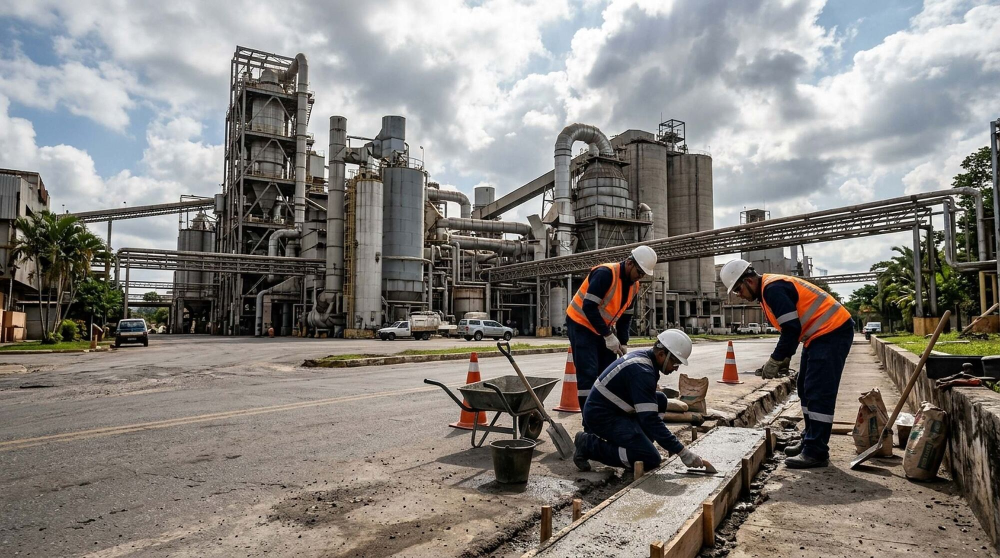
Engenharia e construção civil industrial
Da fundação ao acabamento, em plantas na fase de projeto ou operação.
Obras civis e manutenção de área fabril com equipe própria, segurança e trabalho alinhado às paradas programadas da sua produção.
- Fundada em
- 2023
- Frentes de serviço
- 8
- Setores
- Obras industriais em geral
- Atendimento
- Todo o Brasil
A empresa
Construção civil feita com quem entende de fábrica.
Fundada em 2023 por Marcelo Saccani e Samuel Araujo, a SMRC Engenharia nasceu para entregar serviços de construção civil verdadeiramente diferenciados. Atuamos dentro de plantas industriais em funcionamento, onde cada intervenção precisa conviver com a produção, com as regras de segurança e com janelas curtas de parada.
Experiência em plantas em operação
Celulose, química e alimentos
Trabalho alinhado às paradas programadas
Convívio com a rotina de produção
Equipe própria multidisciplinar
Civil pesada, instalações, acabamentos e manutenção
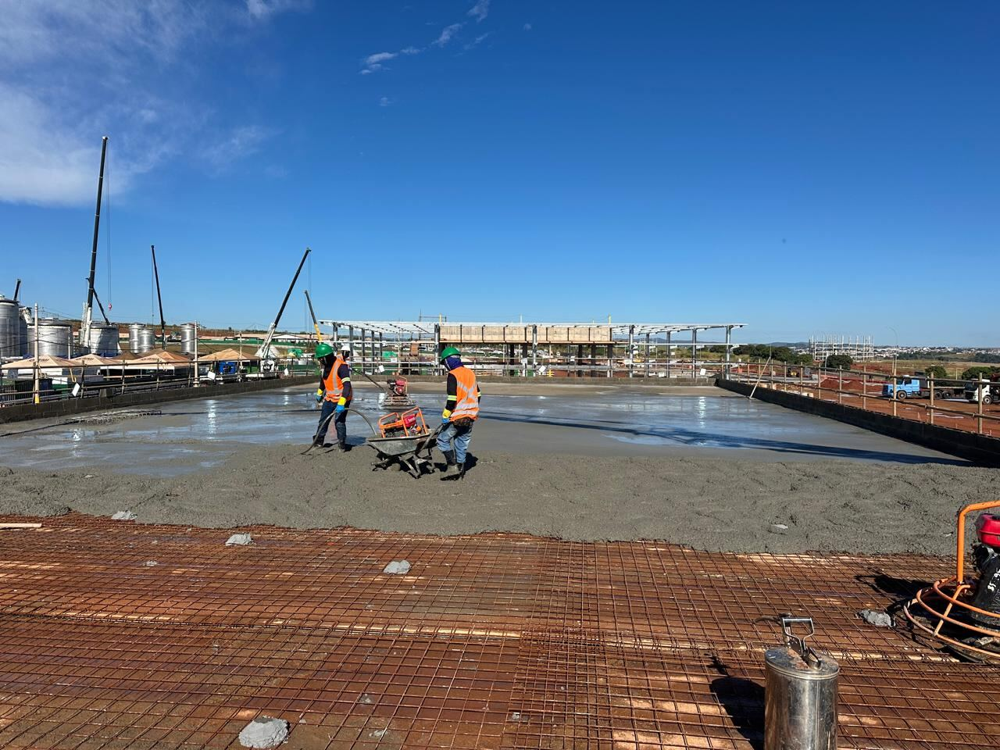
Serviços
O que fazemos na sua planta
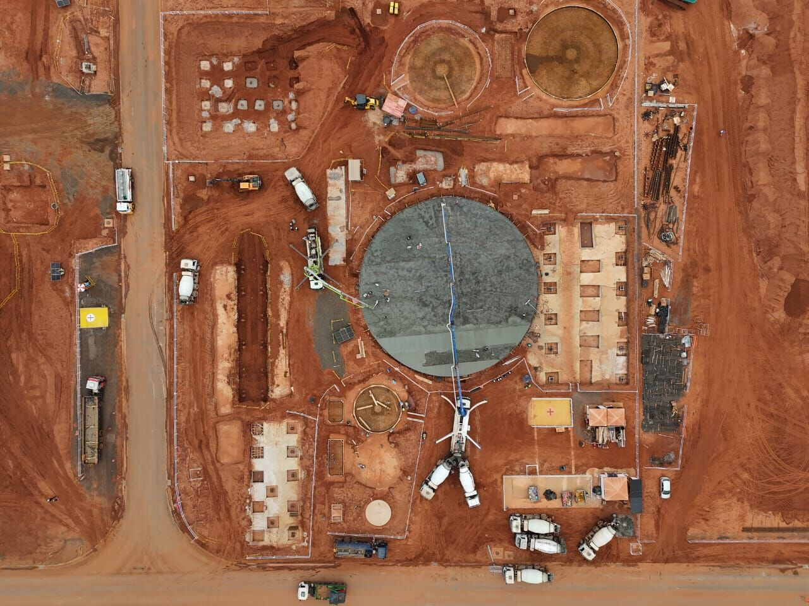
EstruturaConcreto em geral
Armação, formas de madeira ou metálicas e concretagem de lajes, paredes, bases e pisos.
Ver serviço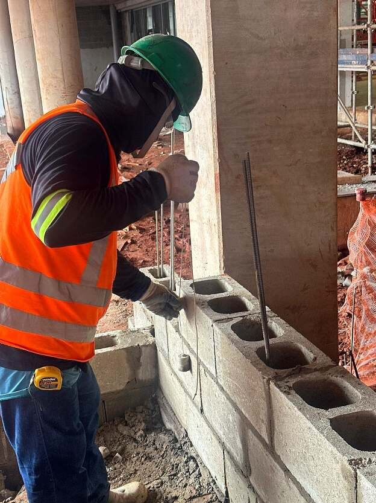
EstruturaVedação em geral
Alvenaria em blocos de concreto, blocos cerâmicos e drywall.
Ver serviço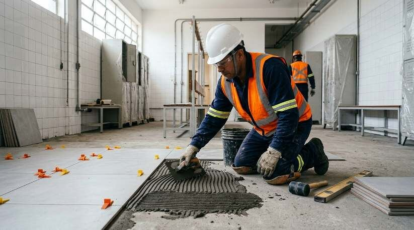
AcabamentosAcabamento
Assentamento de revestimentos cerâmicos e pedras em paredes, pisos, soleiras, peitoris e rodapés.
Ver serviço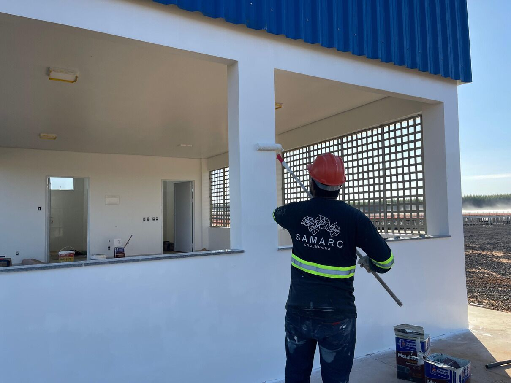
AcabamentosPintura
Selador, emassamento, látex, acrílica e textura sobre reboco ou concreto.
Ver serviço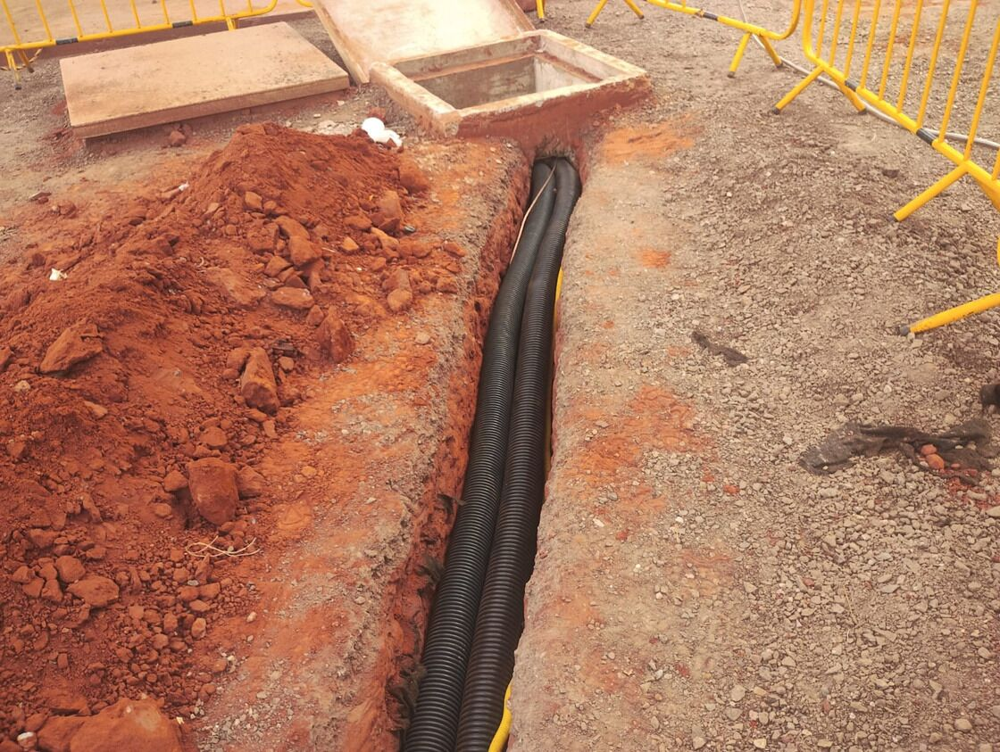
InfraestruturaInfraestrutura
Escavação, instalação e reaterro de redes elétricas, de telecomunicações e hidrossanitárias.
Ver serviço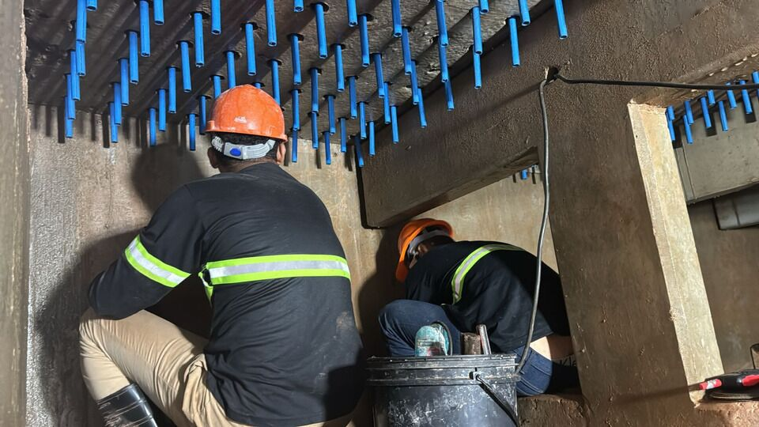
ManutençãoReparos Especializados
Recuperação de estruturas de concreto, tratamento de fissuras e reparos em filtros, tanques e espaços confinados.
Ver serviço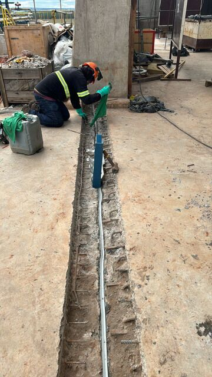
ManutençãoJuntas
Tratamento, recuperação e selagem de juntas de dilatação em pisos e estruturas de concreto.
Ver serviço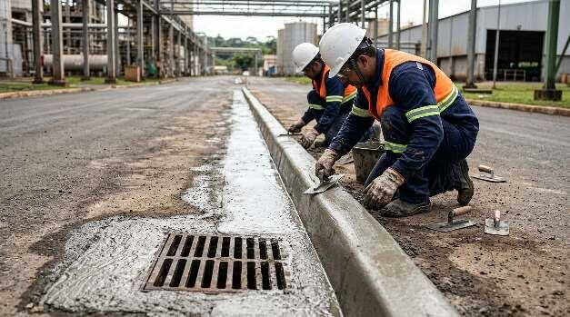
InfraestruturaOutros serviços
Guias, sarjetas, calçadas, demolições, furos em concreto, guarda-corpos, tampas e grades.
Ver serviço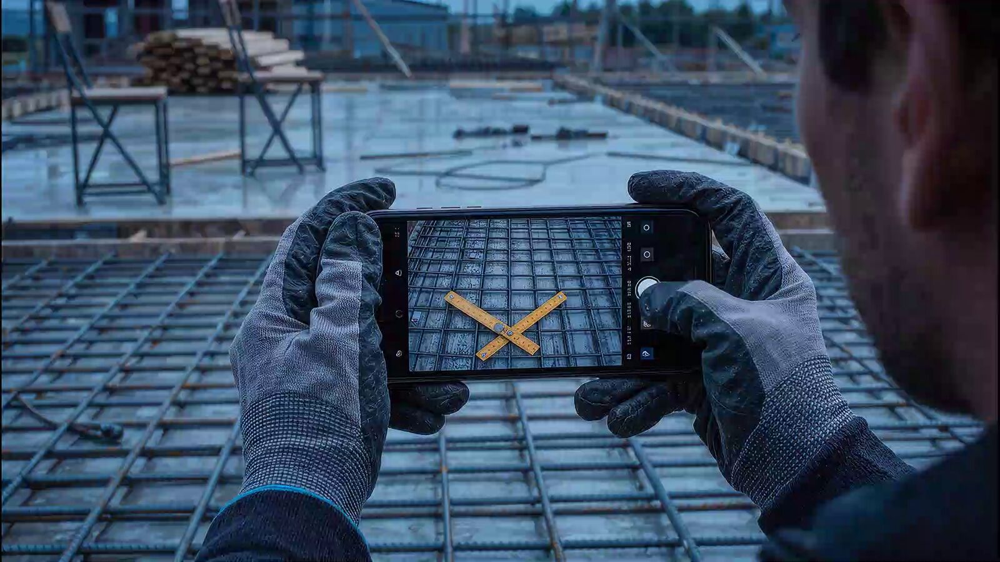
Inspeção de qualidade
Qualidade inspecionada em campo, antes de cada liberação
Para gerenciadoras de obras industriais: nossa equipe inspeciona cada serviço crítico antes da liberação, registra os desvios com foto e entrega todo mês um book de indicadores pronto para o cliente final.
Nenhum serviço liberado sem ficha aprovada
Fichas de verificação no tablet, com foto
Não conformidades com prazo e reinspeção
Desvio corrigido antes da concretagem
Independência
Não executamos serviços na obra que fiscalizamos
Obras recentes
Onde a SMRC está trabalhando
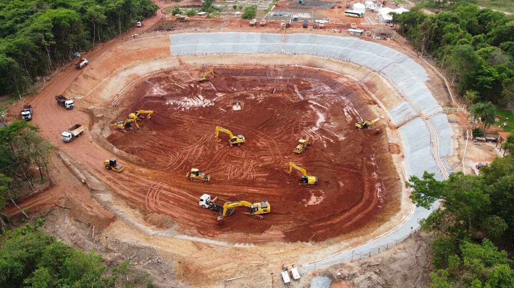
Arauco · Inocência · MS
Terraplenagem da Captação de Água
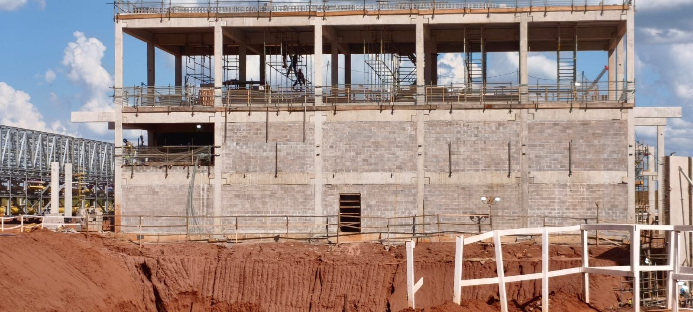
Arauco · Inocência · MS
Alvenaria na Sala Elétrica da ETA
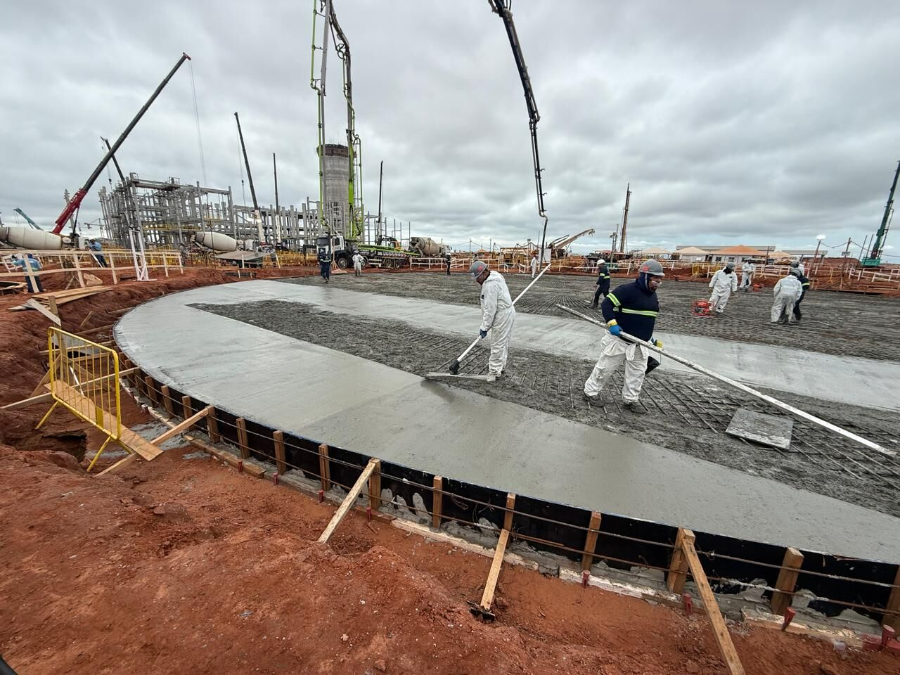
Arauco · Inocência · MS
Laje e piso do tanque de água desmineralizada · ETAC
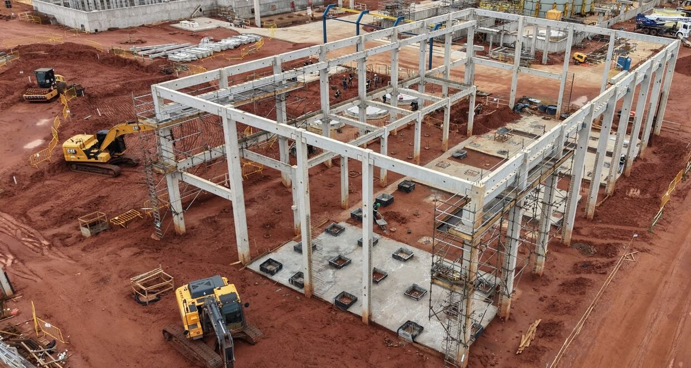
Arauco · Planta química
Edifício de Dissolução de Produtos Químicos e Bissulfito de Sódio
Institucional
Missão, visão e valores
Missão
Proporcionar soluções inovadoras e sustentáveis em engenharia e construção civil, superando as expectativas dos clientes e contribuindo para o desenvolvimento das comunidades e o bem-estar dos colaboradores.
Visão
Ser reconhecida como empresa líder em excelência, qualidade e inovação na engenharia e construção civil, atuando de forma ética, responsável e comprometida com o desenvolvimento sustentável.
Valores
- Excelência
- Máxima qualidade em cada etapa, da concepção à entrega.
- Inovação
- Novas soluções e tecnologias para melhorar processos e resultados.
- Ética
- Integridade e transparência, respeitando leis e normas.
- Sustentabilidade
- Práticas que preservam o meio ambiente para as próximas gerações.
- Valorização das pessoas
- Investimento no desenvolvimento e bem-estar da equipe.
Clientes e parceiros
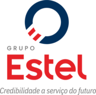
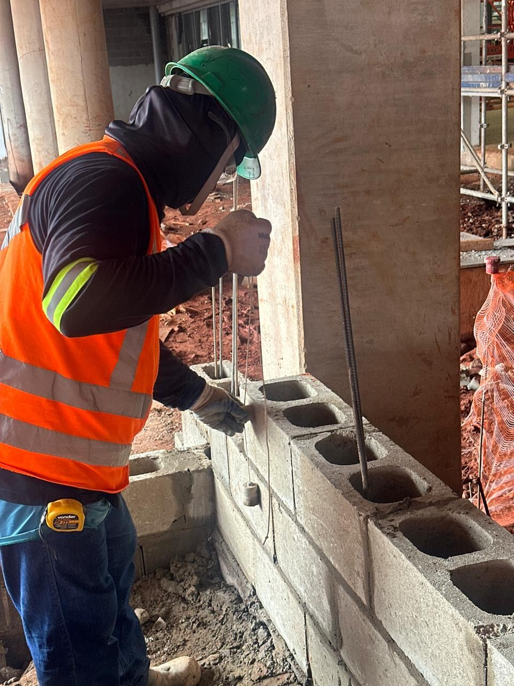
Carreiras
Quer trabalhar com a gente?
Estamos sempre em busca de profissionais de obra, acabamento, engenharia e segurança do trabalho para atuar em grandes plantas industriais.
Trabalhe conoscoQuer começar uma nova obra ou manutenção?
Solicite uma visita técnica com escopo, prazo e equipe dimensionada.